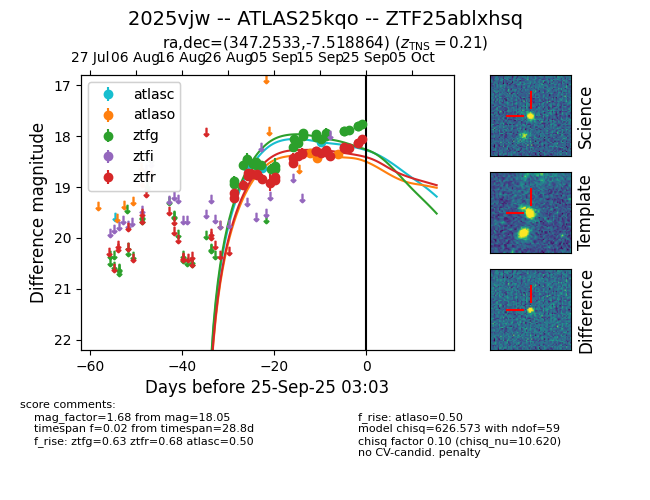
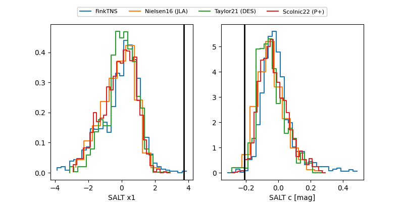

FINK: ZTF25ablxhsq
Lasair: ZTF25ablxhsq
ALeRCE: ZTF25ablxhsq
TNS: 2025vjw
YSE: 2025vjw
ZTF25ablxhsq (ztf,fink)
2025vjw (tns,yse)
ATLAS25kqo (atlas)
equatorial (ra, dec) = (347.2533,-7.51886)
galactic (l, b) = (67.1339,-58.79786)


last atlasc=18.12, atlaso=18.35, ztfg=17.77, ztfr=18.05
3 atlasc, 3 atlaso, 28 ztfg, 29 ztfr detections